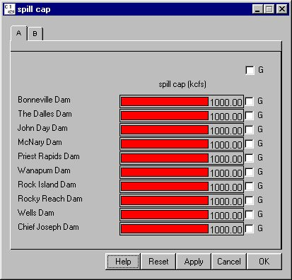

Spill Cap opens a window for setting a maximum flow which can be passed over the spillway at each dam. Spill Cap only applies to Planned Spill; if Forced Spill (see Spill Schedule section) requires exceeding the spill cap, the cap is ignored.
Spill Cap opens a window for setting a maximum flow which can be passed over the spillway at each dam. Spill Cap only applies to Planned Spill; if Forced Spill (see Spill Schedule section) requires exceeding the spill cap, the cap is ignored.
Selecting DamSpill Cap opens a window for setting a maximum flow which can be passed over the spillway at each dam. Spill Cap only applies to Planned Spill; if Forced Spill (see Spill Schedule section) requires exceeding the spill cap, the cap is ignored.
This is a Slider Input window. Click on the letter tabs to page through the list of dams.

Spill Cap window